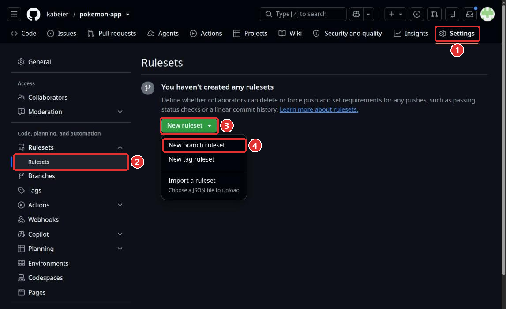
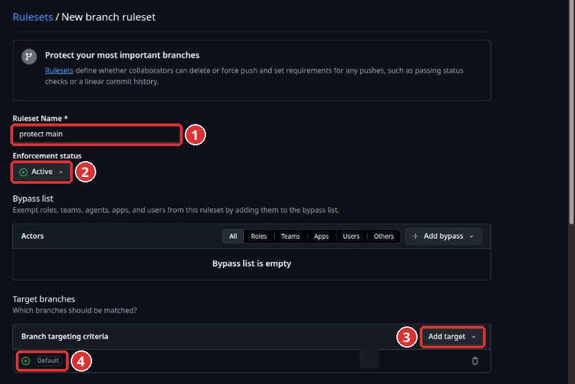
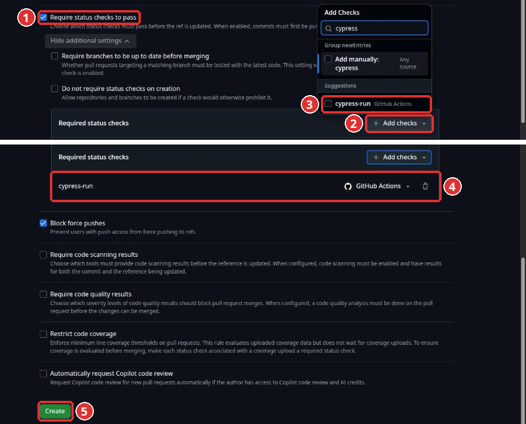
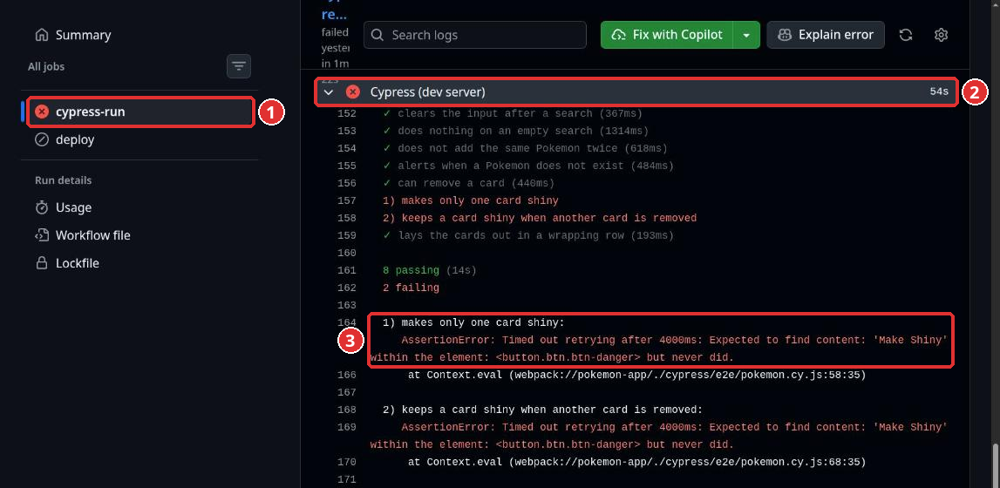

Lint, build and Cypress on every push and pull request; deploy with GitHub's Pages actions after the tests pass.
| Means | Ours | |
|---|---|---|
| CI (continuous integration) | every change is checked on a clean machine | lint + build + 33 Cypress tests |
| CD (continuous delivery) | a change that passes goes live by itself | GitHub Pages, after green |
Nobody deploys a red build.
| Step | Why |
|---|---|
checkout@v7 | the runner starts empty: get the code |
setup-node@v7, node 24, cache npm | same Node as Docker; reuse downloads |
npm ci | exactly the lockfile |
npm run lint · npm run build | catch mistakes before the slow part |
cypress-io/github-action@v7 | start the server, wait, run Cypress |
Cheap checks first, Cypress last.
Lecture 1: deploy.yml | Today: ci-cd.yml | |
|---|---|---|
| Runs on | push to main | push to main and pull requests |
| Tests first? | no: a red push still goes live | yes: needs: cypress-run |
| Pull requests | — | tested, never deployed |
| Publishes with | upload-pages-artifact → deploy-pages (the same) | |
Same Pages actions. New: the tests stand in front.

A red check only warns on a pull request. A ruleset makes it a stop.

protect main
cypress → pick cypress-run (GitHub Actions)Now a red pull request says "Merging is blocked".
| What happened | cypress-run | deploy | Live site |
|---|---|---|---|
push: add ci-cd.yml, delete deploy.yml | ✓ success | ✓ deployed | updated |
| push: "Make Shiny" → "Shine" | ✗ 2 tests fail | skipped | unchanged |
| pull request: the fix | ✓ success | skipped (a PR) | unchanged |
| merge into main | ✓ success | ✓ deployed | updated |
Red tests or a pull request = no deploy. That's the point.
| Do | Never |
|---|---|
permissions: contents: read for the workflow | write access for a job that only reads |
pages: write + id-token: write only on deploy | contents: write just to publish a site |
deploy only on push: if: github.event_name == 'push' | deploys from pull requests |
API keys in Settings → Secrets: ${{ secrets.NAME }} | a password or token in the YAML |
Least access, no secrets in files.

Then: reproduce on your laptop (npm run cy:run), fix, push again.
The first red line is usually the real one.
Compare with: kabeier/pokemon-app runs (a red run, a skipped deploy, a pull request)
From a laptop to a live, tested site with one git push.
needs the tests: green and a push to mainThe tests you wrote since unit 3 now guard every change.
The workflow files are on the class site to copy.